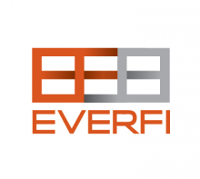

Support
Ms. Jody Liu, MHS teacher, and Margaret Brower, Tisch College staff member, have created a unit "Empathy and Reporting: Trying on Someone Else's Shoes". This curriculum unit is designed to give students an opportunity to consider the complexity of their identities and explore the diversity of other individuals' experiences and identities. Developing multi-cultural compentencies is essential for empathizing with and advocating for diverse groups of people in democracy. This unit offers these opportunities for development through three key components:
- Developing self-awareness and articulating one's unique identity.
- Researching articles and critiquing how reporters capture other people's stories.
The center provided financial support to help Ms. D’Orsi provide resources at the high school. Ms. Maria D’Orsi has developed a Financial Literacy collection for students at Medford High School.
CCRS is working with EverFi to integrate online curriculum in several key areas: Financial Literacy, Digital Citizenship, STEM, African-American History, Alcohol Prevention and Sexual Assault Awareness. EverFi is the leading education technology company focused on teaching, assessing, badging, and certifying students in critical skills.
Project: Students will learn about immigrants, and how they overcame cultural and economic challenges while living in the United States. The students will create a project that provides an analysis of the immigrant experience and explains how individuals were able to succeed in American society. Topics such as the following should be considered:
- overcoming cultural issues and language barriers
- learning American cultures and values
- acquiring and applying important skills in science, the arts, finance, etc.
- demonstrating a strong work ethic
- contributing to American society
Students will learn the basics of investing in the stock market and create a portfolio. They will compete for achievement awards for best portfolio performance. The club participants will access websites, cable/TV programs, local business people and guest speakers to create their portfolios.

Students will research how we learn and the role the brain plays at various age levels. Based on their research, the students will develop strategies and recommendations for acquiring important social and emotional skills. The findings will be shared by producing a media/technology presentation.
Students will write poems and compete for an award. A group of judges from MedfordHigh School will assess the quality of the poems using a rubric developed by the advisor in conjunction with the coordinator
CCRS is providing financial support to help MHS students celebrate our diversity
$500.00 Scholarship Award for Community Service for Medford High School or Vocational High School students
Students will develop projects to support service men/women that are on active duty and/or veterans. Projects could include: corresponding with active service members, raising money for disabled veterans, creating a video to honor members of the armed services or veterans